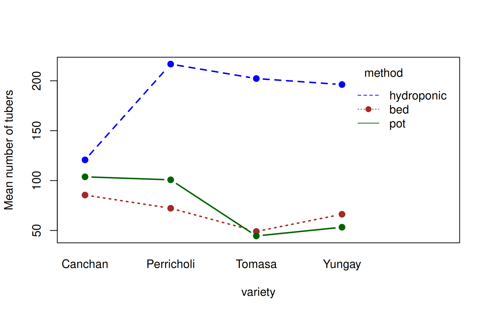

22Research experiments: blocks, factorials, split and strip plots
Learning outcomes
Analyse randomised complete block, Latin square, factorial, split-plot and strip-plot designs, compute the efficiency of blocking, and interpret interactions with simple effects.
Field experiments rarely have homogeneous experimental units. Soil fertility, moisture and slope vary across a field, and this variation inflates the experimental error. Local control, i.e. grouping similar units into blocks, removes part of this variation from the error and makes the comparison of treatments more precise. This chapter covers the analysis of:
randomised complete block design (RCBD), a two-way classification
Latin square design (LSD), a three-way classification
factorial experiments (several factors at once)
split-plot and strip-plot designs (factors applied to plots of different sizes)
All are analysed with aov() (or lm()); only the model formula changes. The agricolae package also has functions (sp.plot(), strip.plot()) that produce tables in the style of Gomez and Gomez (1984). Designs can be randomised with agricolae functions such as design.crd(), design.rcbd(), design.lsd(), design.ab() and design.split().
22.1 Randomised complete block design (RCBD)
The experimental area is divided into \(r\) blocks of \(t\) plots each, so that plots within a block are as uniform as possible. Every treatment appears once in each block, randomised independently in each block. Blocks are laid out across the fertility gradient.
We analyse the yield (t/ha) of 28 potato genotypes grown in three replications (blocks) at La Molina in 2002, part of the plrv data used in Chapter 17.
library(agricolae)data(plrv)lm02 <-droplevels(subset(plrv, Locality =="LM-02"))lm02$Rep <-factor(lm02$Rep) # blocks must be a factorstr(lm02)
Genotypes differ highly significantly (\(p < 0.001\)). The block effect is also significant, which shows that blocking was worthwhile.
Note
Put the block term first in the formula. With balanced data the order does not matter, but with missing values R computes sequential (Type I) sums of squares, and treatments should then be adjusted for blocks.
22.1.3 Efficiency of RCBD relative to CRD
How much did blocking help? The relative efficiency of the RCBD compared with a CRD is
where \(M_b\) and \(M_e\) are the block and error mean squares.
tab <-summary(rcbd)[[1]]Mb <- tab["Rep", "Mean Sq"]; Me <- tab["Residuals", "Mean Sq"]r <-3; t <-28RE <- ((r -1) * Mb + r * (t -1) * Me) / ((r * t -1) * Me)RE
[1] 1.192
The RCBD was about 19% more efficient than a CRD would have been: a CRD would need about 1.19 times as many replications to achieve the same precision.
22.1.4 Comparing genotypes
With 28 genotypes, letter groupings become long. Here we show the top ten by Tukey’s HSD:
When fertility varies in two directions, a Latin square controls both. With \(t\) treatments, the field is divided into \(t\) rows and \(t\) columns, and each treatment occurs exactly once in each row and each column. The number of replications equals the number of treatments, so the design is practical for 4 to 8 treatments.
Four melon varieties were compared in a 4 × 4 Latin square (melon in agricolae):
data(melon)melon$row <-factor(melon$row)melon$col <-factor(melon$col)# Layout of the varieties in the fieldxtabs(as.integer(variety) ~ row + col, data = melon)
lsd_model <-aov(yield ~ row + col + variety, data = melon)summary(lsd_model)
Df Sum Sq Mean Sq F value Pr(>F)
row 3 426 142.1 2.86 0.13
col 3 152 50.7 1.02 0.45
variety 3 484 161.2 3.25 0.10
Residuals 6 298 49.6
tapply(melon$yield, melon$variety, mean)
V1 V2 V3 V4
47.25 42.25 49.25 35.00
The varieties do not differ significantly (\(p = 0.10\)), so no multiple comparison is needed. With only 6 error df, a Latin square of this size has low power.
22.3 Factorial experiments
In a factorial experiment two or more factors are studied together, and every level of each factor is combined with every level of the others. A 3 × 4 factorial has 12 treatment combinations. Factorial experiments estimate:
the main effect of each factor, averaged over the levels of the other factor;
the interaction: whether the effect of one factor depends on the level of the other.
where \(\alpha_i\) and \(\gamma_j\) are the main effects of factors A and B, and \((\alpha\gamma)_{ij}\) their interaction.
22.3.2 Example 22.3
In a greenhouse experiment at CIP, Peru, four potato varieties were grown by three methods of minituber production (plant bed, hydroponics and pots) in four replications. The response is the number of minitubers from 10 plants (greenhouse2 in agricolae).
Both main effects and the interaction are significant. When the interaction is significant, the main effects can be misleading: the effect of variety depends on the method. Look at the two-way table of means and an interaction plot:
Canchan Perricholi Tomasa Yungay
bed 85.5 72.2 49.0 66.2
hydroponic 120.8 216.8 202.2 196.2
pot 103.8 100.8 44.5 53.2
with(gh, interaction.plot(variety, method, tubers, type ="b", pch =19,col =c("brown", "blue", "darkgreen"), lwd =2,ylab ="Mean number of tubers"))

Hydroponics produced far more tubers than the other methods. In hydroponics, Perricholi, Tomasa and Yungay produced many more tubers than Canchan, whereas in beds and pots Canchan was among the best. Because of this interaction, the varieties should be compared separately within each method (simple effects):
library(emmeans)
Welcome to emmeans.
Caution: You lose important information if you filter this package's results.
See '? untidy'
Note: adjust = "tukey" was changed to "sidak"
because "tukey" is only appropriate for one set of pairwise comparisons
method = bed:
variety emmean SE df lower.CL upper.CL .group
Tomasa 49.0 12.4 33 16.4 81.5 a
Yungay 66.2 12.4 33 33.7 98.8 a
Perricholi 72.2 12.4 33 39.7 104.8 a
Canchan 85.5 12.4 33 53.0 118.0 a
method = hydroponic:
variety emmean SE df lower.CL upper.CL .group
Canchan 120.8 12.4 33 88.2 153.3 a
Yungay 196.2 12.4 33 163.7 228.8 b
Tomasa 202.2 12.4 33 169.7 234.8 b
Perricholi 216.8 12.4 33 184.2 249.3 b
method = pot:
variety emmean SE df lower.CL upper.CL .group
Tomasa 44.5 12.4 33 11.9 77.0 a
Yungay 53.2 12.4 33 20.7 85.8 a
Perricholi 100.8 12.4 33 68.2 133.3 b
Canchan 103.8 12.4 33 71.2 136.3 b
Results are averaged over the levels of: replication
Confidence level used: 0.95
Conf-level adjustment: sidak method for 4 estimates
P value adjustment: tukey method for comparing a family of 4 estimates
significance level used: alpha = 0.05
NOTE: If two or more means share the same grouping symbol,
then we cannot show them to be different.
But we also did not show them to be the same.
Within plant beds the varieties do not differ significantly. In hydroponics, Canchan produced significantly fewer tubers than the other three varieties, while in pots Canchan and Perricholi produced significantly more than Tomasa and Yungay.
Tip
If the interaction is not significant, compare the levels of each factor using the main-effect means: HSD.test(fact, "method") or emmeans(fact, ~ method).
22.4 Split-plot design
In a split-plot design one factor is applied to large plots (main plots) and the second factor to smaller plots (sub-plots) within each main plot. It is used when one factor needs large plots (irrigation, tillage, dates of sowing) or when one factor is of greater interest and should be estimated more precisely. Because main-plot treatments are randomised over larger units with fewer replicates, there are two error terms:
Error (a): for testing the main-plot factor;
Error (b): for testing the sub-plot factor and the interaction (usually smaller).
where \(\delta_{ik}\) is the main-plot error and \(e_{ijk}\) the sub-plot error.
Source
df
Blocks
\(r - 1\)
A (main plot)
\(a - 1\)
Error (a)
\((r-1)(a-1)\)
B (sub-plot)
\(b - 1\)
A × B
\((a-1)(b-1)\)
Error (b)
\(a(r-1)(b-1)\)
Total
\(rab - 1\)
22.4.1 Example 22.4
The classic oats experiment of Yates (1935), oats in the MASS package, had three oat varieties on main plots and four levels of nitrogen manure (0, 0.2, 0.4, 0.6 cwt per acre) on sub-plots, in six blocks. Yield is in units of 1/4 lb per sub-plot.
In aov() the two error strata are specified with Error(): Error(B/V) says that main plots are the varieties within blocks.
split <-aov(Y ~ V * N +Error(B / V), data = oats)summary(split)
Error: B
Df Sum Sq Mean Sq F value Pr(>F)
Residuals 5 15875 3175
Error: B:V
Df Sum Sq Mean Sq F value Pr(>F)
V 2 1786 893 1.49 0.27
Residuals 10 6013 601
Error: Within
Df Sum Sq Mean Sq F value Pr(>F)
N 3 20020 6673 37.7 2.5e-12 ***
V:N 6 322 54 0.3 0.93
Residuals 45 7969 177
---
Signif. codes: 0 '***' 0.001 '**' 0.01 '*' 0.05 '.' 0.1 ' ' 1
The variety effect is tested against Error (a) (the B:V stratum) and is not significant (\(p = 0.27\)). Nitrogen is highly significant, and the V × N interaction is not, so the response to nitrogen is similar for all varieties. The sp.plot() function of agricolae gives the same analysis in a single table with both CVs:
sp <-with(oats, sp.plot(block = B, pplot = V, splot = N, Y = Y))
ANALYSIS SPLIT PLOT: Y
Class level information
V : Victory Golden.rain Marvellous
N : 0.0cwt 0.2cwt 0.4cwt 0.6cwt
B : I II III IV V VI
Number of observations: 72
Analysis of Variance Table
Response: Y
Df Sum Sq Mean Sq F value Pr(>F)
B 5 15875 3175 17.93 9.5e-10 ***
V 2 1786 893 1.49 0.27
Ea 10 6013 601
N 3 20020 6673 37.69 2.5e-12 ***
V:N 6 322 54 0.30 0.93
Eb 45 7969 177
---
Signif. codes: 0 '***' 0.001 '**' 0.01 '*' 0.05 '.' 0.1 ' ' 1
cv(a) = 23.6 %, cv(b) = 12.8 %, Mean = 104
Yield increases steadily with nitrogen. Because nitrogen is a quantitative factor, the appropriate follow-up is to fit a response curve rather than to compare the levels pairwise; this is done with orthogonal polynomials in Chapter 23.
Warning
Comparisons of means in a split-plot need different standard errors: one for main-plot means, one for sub-plot means, and two more for comparing sub-plot treatments within or across main plots. Fitting the split plot as a mixed model and using emmeans (Chapter 25) computes the correct standard error for any comparison automatically.
22.5 Strip-plot design
In a strip-plot (strip-block) design, factor A is applied in horizontal strips and factor B in vertical strips across each block. The design is used when both factors need large plots (e.g. irrigation and tillage). There are three error terms: for A, for B, and for the interaction.
22.5.1 Example 22.5
Gomez and Gomez (1984) (Table 3.11) give the grain yield (kg/ha) of six rice varieties (horizontal strips) at three nitrogen levels (0, 60, 120 kg N/ha; vertical strips) in three replications (gomez.stripplot in agridat):
library(agridat)gs <- gomez.stripplotgs$nitro <-factor(gs$nitro)strip <-with(gs, strip.plot(BLOCK = rep, COL = gen, ROW = nitro, Y = yield))
ANALYSIS STRIP PLOT: yield
Class level information
gen : G1 G2 G3 G4 G5 G6
nitro : 0 60 120
rep : R1 R2 R3
Number of observations: 54
model Y: yield ~ rep + gen + Ea + nitro + Eb + nitro:gen + Ec
Analysis of Variance Table
Response: yield
Df Sum Sq Mean Sq F value Pr(>F)
rep 2 9220962 4610481
gen 5 57100201 11420040 7.65 0.00337 **
Ea 10 14922619 1492262
nitro 2 50676061 25338031 34.07 0.00307 **
Eb 4 2974908 743727
nitro:gen 10 23877979 2387798 5.80 0.00043 ***
Ec 20 8232917 411646
---
Signif. codes: 0 '***' 0.001 '**' 0.01 '*' 0.05 '.' 0.1 ' ' 1
cv(a) = 23.1 %, cv(b) = 16.3 %, cv(c) = 12.1 %, Mean = 5290
# The same with aov(): three error stratasummary(aov(yield ~ gen * nitro +Error(rep / (gen + nitro)), data = gs))
Error: rep
Df Sum Sq Mean Sq F value Pr(>F)
Residuals 2 9220962 4610481
Error: rep:gen
Df Sum Sq Mean Sq F value Pr(>F)
gen 5 57100201 11420040 7.65 0.0034 **
Residuals 10 14922619 1492262
---
Signif. codes: 0 '***' 0.001 '**' 0.01 '*' 0.05 '.' 0.1 ' ' 1
Error: rep:nitro
Df Sum Sq Mean Sq F value Pr(>F)
nitro 2 50676061 25338031 34.1 0.0031 **
Residuals 4 2974908 743727
---
Signif. codes: 0 '***' 0.001 '**' 0.01 '*' 0.05 '.' 0.1 ' ' 1
Error: Within
Df Sum Sq Mean Sq F value Pr(>F)
gen:nitro 10 23877979 2387798 5.8 0.00043 ***
Residuals 20 8232917 411646
---
Signif. codes: 0 '***' 0.001 '**' 0.01 '*' 0.05 '.' 0.1 ' ' 1
Varieties, nitrogen and their interaction are all significant. The interaction is clear from the table of means: variety G6 declines at the highest nitrogen level, while the others increase.
Edit the code, then select Run R. The first run downloads R into your browser and may take a little time. Copy code lets you use the example in RStudio.
yield <-c(45, 29, 37, 38, 50, 53, 41, 40, 43, 41, 41, 35, 35, 63, 63, 41)variety <-factor(c("V1","V4","V2","V3","V2","V3","V4","V1","V3","V2","V1","V4","V4","V1","V3","V2"))row <-factor(rep(1:4, each =4)); col <-factor(rep(1:4, times =4))table(row, variety) # each variety once in every rowfit <-aov(yield ~ row + col + variety)summary(fit)tapply(yield, variety, mean)# The same data analysed as if they were a CRDsummary(aov(yield ~ variety))
Investigate. Compare the error mean squares of the Latin square and the CRD analyses. Did removing row and column variation help in this experiment?
22.7 Practical 24 and exercises
Analyse the yield of the 28 genotypes of the plrv data at locality SR-02 as an RCBD. Compute the CV and the efficiency relative to a CRD.
Analyse the tuber weight (weight) of the greenhouse2 data as a two-factor factorial in RCBD. Is the interaction significant?
The npk data (built into R) are from a 2 × 2 × 2 factorial experiment on peas in six blocks. Analyse the yield and identify the important factors.
Use design.rcbd() from agricolae to prepare a randomised field layout for 8 treatments in 4 blocks.
Historical Insights
Frank Yates analysed the classic split-plot oats experiment at Rothamsted in 1935. The split-plot design was developed by Fisher and Yates because some treatments, such as cultivation or irrigation, can only be applied to large plots.
22.8 Chapter Summary
Fill in the blanks
Answers are given at the end of the chapter.
Grouping similar plots into blocks is called local __________.
In a Latin square the number of replications equals the number of __________.
A factorial experiment estimates main effects and __________.
In a split-plot design the sub-plot factor is estimated more __________ than the main-plot factor.
A strip-plot design has __________ error terms.
In aov(), error strata are specified with __________.
When the interaction is significant, compare one factor __________ each level of the other.
The relative efficiency of RCBD measures the gain from __________.
Short-answer questions
When would you choose a Latin square over an RCBD?
Why does a split-plot design have two error terms?
Distinguish between split-plot and strip-plot designs.
How should a significant interaction be followed up?
How are split-plot experiments analysed in R?
Numerical and conceptual questions
Answers are given at the end of the chapter.
An RCBD of 28 genotypes in 3 blocks has block MS 240.13 and error MS 26.76. Find the efficiency relative to a CRD.
A split-plot has 6 blocks, 3 main-plot varieties and 4 nitrogen levels. Find the df of errors (a) and (b).